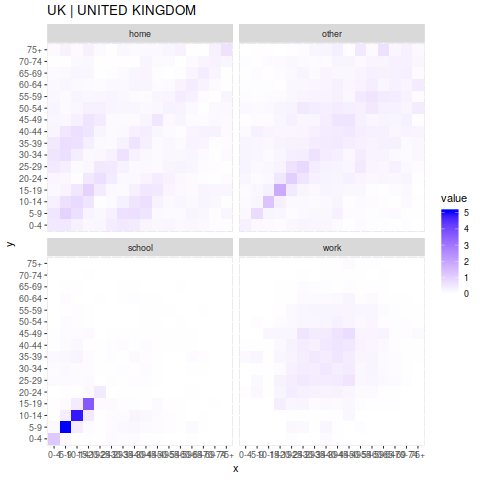
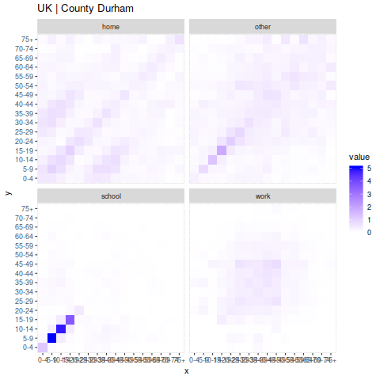
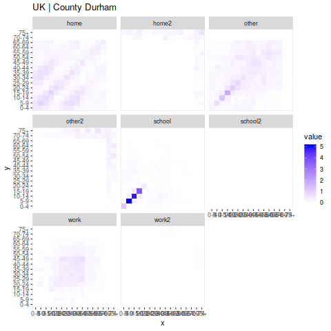
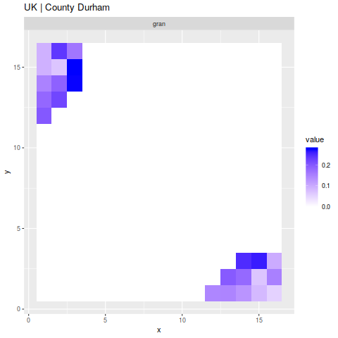
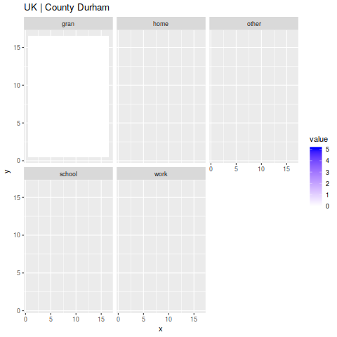
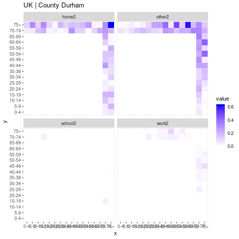

UK.R
Table of Contents
1 Approach
- Treat C++ code as a black box for config
- Understand "configuration" via R script
- Focus on performance of C++ code
- Understand mechanics of configuration
- Still have open questions
2 Setup
Import some libraries:
library(rlang) library(reshape2) library(stringr) library(rprojroot) library(tibble)
Some setup of directories, sourcing code and building:
covid_uk_path = getwd() cm_path = file.path(covid_uk_path, "covidm"); source(file.path(cm_path, "R/covidm.R"))
3 Locations
3.1 level 0
Look for regions with different level/granularity:
cm_uk_locations("UK", 0)
[1] "UK | UNITED KINGDOM"
In this case, since "level" is zero, only fetch UK region.
We can do the same thing for regions of the UK at level 2
3.2 level 1
Look for regions with different level/granularity:
cm_uk_locations("UK", 1)
[1] "UK | ENGLAND" "UK | WALES" "UK | SCOTLAND" "UK | NORTHERN IRELAND"
Wales is here as an aggregate region.
3.3 level 2
locations = cm_uk_locations("UK", 2); locations
UK | NORTH EAST UK | NORTH WEST UK | YORKSHIRE AND THE HUMBER UK | EAST MIDLANDS UK | WEST MIDLANDS UK | EAST UK | LONDON UK | SOUTH EAST UK | SOUTH WEST UK | WALES UK | SCOTLAND UK | NORTHERN IRELAND
3.4 level 3
locations = cm_uk_locations("UK", 3); locations
UK | County Durham UK | Darlington UK | Hartlepool UK | Middlesbrough UK | Northumberland UK | Redcar and Cleveland UK | Stockton-on-Tees UK | Tyne and Wear (Met County) UK | Blackburn with Darwen UK | Blackpool UK | Cheshire East UK | Cheshire West and Chester UK | Halton UK | Warrington UK | Cumbria UK | Greater Manchester (Met County) UK | Lancashire UK | Merseyside (Met County) UK | East Riding of Yorkshire UK | Kingston upon Hull, City of UK | North East Lincolnshire UK | North Lincolnshire UK | York UK | North Yorkshire UK | South Yorkshire (Met County) UK | West Yorkshire (Met County) UK | Derby UK | Leicester UK | Nottingham UK | Rutland UK | Derbyshire UK | Leicestershire UK | Lincolnshire UK | Northamptonshire UK | Nottinghamshire UK | Herefordshire, County of UK | Shropshire UK | Stoke-on-Trent UK | Telford and Wrekin UK | Staffordshire UK | Warwickshire UK | West Midlands (Met County) UK | Worcestershire UK | Bedford UK | Central Bedfordshire UK | Luton UK | Peterborough UK | Southend-on-Sea UK | Thurrock UK | Cambridgeshire UK | Essex UK | Hertfordshire UK | Norfolk UK | Suffolk UK | Camden UK | City of London UK | Hackney UK | Hammersmith and Fulham UK | Haringey UK | Islington UK | Kensington and Chelsea UK | Lambeth UK | Lewisham UK | Newham UK | Southwark UK | Tower Hamlets UK | Wandsworth UK | Westminster UK | Barking and Dagenham UK | Barnet UK | Bexley UK | Brent UK | Bromley UK | Croydon UK | Ealing UK | Enfield UK | Greenwich UK | Harrow UK | Havering UK | Hillingdon UK | Hounslow UK | Kingston upon Thames UK | Merton UK | Redbridge UK | Richmond upon Thames UK | Sutton UK | Waltham Forest UK | Bracknell Forest UK | Brighton and Hove UK | Isle of Wight UK | Medway UK | Milton Keynes UK | Portsmouth UK | Reading UK | Slough UK | Southampton UK | West Berkshire UK | Windsor and Maidenhead UK | Wokingham UK | Buckinghamshire UK | East Sussex UK | Hampshire UK | Kent UK | Oxfordshire UK | Surrey UK | West Sussex UK | Bath and North East Somerset UK | Bournemouth, Christchurch and Poole UK | Bristol, City of UK | Cornwall UK | Dorset UK | Isles of Scilly UK | North Somerset UK | Plymouth UK | South Gloucestershire UK | Swindon UK | Torbay UK | Wiltshire UK | Devon UK | Gloucestershire UK | Somerset UK | Isle of Anglesey UK | Gwynedd UK | Conwy UK | Denbighshire UK | Flintshire UK | Wrexham UK | Powys UK | Ceredigion UK | Pembrokeshire UK | Carmarthenshire UK | Swansea UK | Neath Port Talbot UK | Bridgend UK | Vale of Glamorgan UK | Cardiff UK | Rhondda Cynon Taf UK | Merthyr Tydfil UK | Caerphilly UK | Blaenau Gwent UK | Torfaen UK | Monmouthshire UK | Newport UK | Aberdeen City UK | Aberdeenshire UK | Angus UK | Argyll and Bute UK | City of Edinburgh UK | Clackmannanshire UK | Dumfries and Galloway UK | Dundee City UK | East Ayrshire UK | East Dunbartonshire UK | East Lothian UK | East Renfrewshire UK | Falkirk UK | Fife UK | Glasgow City UK | Highland UK | Inverclyde UK | Midlothian UK | Moray UK | Na h-Eileanan Siar UK | North Ayrshire UK | North Lanarkshire UK | Orkney Islands UK | Perth and Kinross UK | Renfrewshire UK | Scottish Borders UK | Shetland Islands UK | South Ayrshire UK | South Lanarkshire UK | Stirling UK | West Dunbartonshire UK | West Lothian UK | Antrim and Newtownabbey UK | Ards and North Down UK | Armagh City, Banbridge and Craigavon UK | Belfast UK | Causeway Coast and Glens UK | Derry City and Strabane UK | Fermanagh and Omagh UK | Lisburn and Castlereagh UK | Mid and East Antrim UK | Mid Ulster UK | Newry, Mourne and Down
3.5 level 4
locations = cm_uk_locations("UK", 4); locations
UK | County Durham UK | Darlington UK | Hartlepool UK | Middlesbrough UK | Northumberland UK | Redcar and Cleveland UK | Stockton-on-Tees UK | Gateshead UK | Newcastle upon Tyne UK | North Tyneside UK | South Tyneside UK | Sunderland UK | Blackburn with Darwen UK | Blackpool UK | Cheshire East UK | Cheshire West and Chester UK | Halton UK | Warrington UK | Allerdale UK | Barrow-in-Furness UK | Carlisle UK | Copeland UK | Eden UK | South Lakeland UK | Bolton UK | Bury UK | Manchester UK | Oldham UK | Rochdale UK | Salford UK | Stockport UK | Tameside UK | Trafford UK | Wigan UK | Burnley UK | Chorley UK | Fylde UK | Hyndburn UK | Lancaster UK | Pendle UK | Preston UK | Ribble Valley UK | Rossendale UK | South Ribble UK | West Lancashire UK | Wyre UK | Knowsley UK | Liverpool UK | Sefton UK | St. Helens UK | Wirral UK | East Riding of Yorkshire UK | Kingston upon Hull, City of UK | North East Lincolnshire UK | North Lincolnshire UK | York UK | Craven UK | Hambleton UK | Harrogate UK | Richmondshire UK | Ryedale UK | Scarborough UK | Selby UK | Barnsley UK | Doncaster UK | Rotherham UK | Sheffield UK | Bradford UK | Calderdale UK | Kirklees UK | Leeds UK | Wakefield UK | Derby UK | Leicester UK | Nottingham UK | Rutland UK | Amber Valley UK | Bolsover UK | Chesterfield UK | Derbyshire Dales UK | Erewash UK | High Peak UK | North East Derbyshire UK | South Derbyshire UK | Blaby UK | Charnwood UK | Harborough UK | Hinckley and Bosworth UK | Melton UK | North West Leicestershire UK | Oadby and Wigston UK | Boston UK | East Lindsey UK | Lincoln UK | North Kesteven UK | South Holland UK | South Kesteven UK | West Lindsey UK | Corby UK | Daventry UK | East Northamptonshire UK | Kettering UK | Northampton UK | South Northamptonshire UK | Wellingborough UK | Ashfield UK | Bassetlaw UK | Broxtowe UK | Gedling UK | Mansfield UK | Newark and Sherwood UK | Rushcliffe UK | Herefordshire, County of UK | Shropshire UK | Stoke-on-Trent UK | Telford and Wrekin UK | Cannock Chase UK | East Staffordshire UK | Lichfield UK | Newcastle-under-Lyme UK | South Staffordshire UK | Stafford UK | Staffordshire Moorlands UK | Tamworth UK | North Warwickshire UK | Nuneaton and Bedworth UK | Rugby UK | Stratford-on-Avon UK | Warwick UK | Birmingham UK | Coventry UK | Dudley UK | Sandwell UK | Solihull UK | Walsall UK | Wolverhampton UK | Bromsgrove UK | Malvern Hills UK | Redditch UK | Worcester UK | Wychavon UK | Wyre Forest UK | Bedford UK | Central Bedfordshire UK | Luton UK | Peterborough UK | Southend-on-Sea UK | Thurrock UK | Cambridge UK | East Cambridgeshire UK | Fenland UK | Huntingdonshire UK | South Cambridgeshire UK | Basildon UK | Braintree UK | Brentwood UK | Castle Point UK | Chelmsford UK | Colchester UK | Epping Forest UK | Harlow UK | Maldon UK | Rochford UK | Tendring UK | Uttlesford UK | Broxbourne UK | Dacorum UK | East Hertfordshire UK | Hertsmere UK | North Hertfordshire UK | St Albans UK | Stevenage UK | Three Rivers UK | Watford UK | Welwyn Hatfield UK | Breckland UK | Broadland UK | Great Yarmouth UK | King's Lynn and West Norfolk UK | North Norfolk UK | Norwich UK | South Norfolk UK | Babergh UK | East Suffolk UK | Ipswich UK | Mid Suffolk UK | West Suffolk UK | Camden UK | City of London UK | Hackney UK | Hammersmith and Fulham UK | Haringey UK | Islington UK | Kensington and Chelsea UK | Lambeth UK | Lewisham UK | Newham UK | Southwark UK | Tower Hamlets UK | Wandsworth UK | Westminster UK | Barking and Dagenham UK | Barnet UK | Bexley UK | Brent UK | Bromley UK | Croydon UK | Ealing UK | Enfield UK | Greenwich UK | Harrow UK | Havering UK | Hillingdon UK | Hounslow UK | Kingston upon Thames UK | Merton UK | Redbridge UK | Richmond upon Thames UK | Sutton UK | Waltham Forest UK | Bracknell Forest UK | Brighton and Hove UK | Isle of Wight UK | Medway UK | Milton Keynes UK | Portsmouth UK | Reading UK | Slough UK | Southampton UK | West Berkshire UK | Windsor and Maidenhead UK | Wokingham UK | Aylesbury Vale UK | Chiltern UK | South Bucks UK | Wycombe UK | Eastbourne UK | Hastings UK | Lewes UK | Rother UK | Wealden UK | Basingstoke and Deane UK | East Hampshire UK | Eastleigh UK | Fareham UK | Gosport UK | Hart UK | Havant UK | New Forest UK | Rushmoor UK | Test Valley UK | Winchester UK | Ashford UK | Canterbury UK | Dartford UK | Dover UK | Folkestone and Hythe UK | Gravesham UK | Maidstone UK | Sevenoaks UK | Swale UK | Thanet UK | Tonbridge and Malling UK | Tunbridge Wells UK | Cherwell UK | Oxford UK | South Oxfordshire UK | Vale of White Horse UK | West Oxfordshire UK | Elmbridge UK | Epsom and Ewell UK | Guildford UK | Mole Valley UK | Reigate and Banstead UK | Runnymede UK | Spelthorne UK | Surrey Heath UK | Tandridge UK | Waverley UK | Woking UK | Adur UK | Arun UK | Chichester UK | Crawley UK | Horsham UK | Mid Sussex UK | Worthing UK | Bath and North East Somerset UK | Bournemouth, Christchurch and Poole UK | Bristol, City of UK | Cornwall UK | Dorset UK | Isles of Scilly UK | North Somerset UK | Plymouth UK | South Gloucestershire UK | Swindon UK | Torbay UK | Wiltshire UK | East Devon UK | Exeter UK | Mid Devon UK | North Devon UK | South Hams UK | Teignbridge UK | Torridge UK | West Devon UK | Cheltenham UK | Cotswold UK | Forest of Dean UK | Gloucester UK | Stroud UK | Tewkesbury UK | Mendip UK | Sedgemoor UK | Somerset West and Taunton UK | South Somerset UK | Isle of Anglesey UK | Gwynedd UK | Conwy UK | Denbighshire UK | Flintshire UK | Wrexham UK | Powys UK | Ceredigion UK | Pembrokeshire UK | Carmarthenshire UK | Swansea UK | Neath Port Talbot UK | Bridgend UK | Vale of Glamorgan UK | Cardiff UK | Rhondda Cynon Taf UK | Merthyr Tydfil UK | Caerphilly UK | Blaenau Gwent UK | Torfaen UK | Monmouthshire UK | Newport UK | Aberdeen City UK | Aberdeenshire UK | Angus UK | Argyll and Bute UK | City of Edinburgh UK | Clackmannanshire UK | Dumfries and Galloway UK | Dundee City UK | East Ayrshire UK | East Dunbartonshire UK | East Lothian UK | East Renfrewshire UK | Falkirk UK | Fife UK | Glasgow City UK | Highland UK | Inverclyde UK | Midlothian UK | Moray UK | Na h-Eileanan Siar UK | North Ayrshire UK | North Lanarkshire UK | Orkney Islands UK | Perth and Kinross UK | Renfrewshire UK | Scottish Borders UK | Shetland Islands UK | South Ayrshire UK | South Lanarkshire UK | Stirling UK | West Dunbartonshire UK | West Lothian UK | Antrim and Newtownabbey UK | Ards and North Down UK | Armagh City, Banbridge and Craigavon UK | Belfast UK | Causeway Coast and Glens UK | Derry City and Strabane UK | Fermanagh and Omagh UK | Lisburn and Castlereagh UK | Mid and East Antrim UK | Mid Ulster UK | Newry, Mourne and Down
4 UK Parameters
Build parameters. This includes a population matrix for each of the locations, constructed using dE, dIp, dIs, dIa etc.
Deterministic is a flag that's set in the output data structure.
parametersUK1 = cm_parameters_SEI3R(cm_uk_locations("UK", 0), dE = cm_delay_gamma(4.0, 4.0, t_max = 60, t_step = 0.25)$p, dIp = cm_delay_gamma(1.5, 4.0, t_max = 60, t_step = 0.25)$p, dIs = cm_delay_gamma(3.5, 4.0, t_max = 60, t_step = 0.25)$p, dIa = cm_delay_gamma(5.0, 4.0, t_max = 60, t_step = 0.25)$p, deterministic = F);
cm delay gamma returns 241 entries. Presumably one per time step (60*4 = 240).
summary(cm_delay_gamma(4.0, 4.0, t_max = 60, t_step = 0.25)$p)
Min. 1st Qu. Median Mean 3rd Qu. Max. 0.000e+00 0.000e+00 0.000e+00 4.149e-03 3.526e-05 5.596e-02
The "$matrices" entry is the same for each population. It's read from a file (allmatrices.rds).
This file contains data for 617 countries, each with a contact matrix that looks like:
List of 4 $ home : num [1:18, 1:18] 0.2464 0.1514 0.0509 0.0702 0.0861 ... ..- attr(*, "dimnames")=List of 2 .. ..$ : chr [1:18] "0-4" "5-9" "10-14" "15-19" ... .. ..$ contact.age.group: chr [1:18] "0-4" "5-9" "10-14" "15-19" ... $ work : num [1:18, 1:18] 0.02899 0 0 0 0.00702 ... ..- attr(*, "dimnames")=List of 2 .. ..$ : chr [1:18] "0-4" "5-9" "10-14" "15-19" ... .. ..$ contact.age.group: chr [1:18] "0-4" "5-9" "10-14" "15-19" ... $ school: num [1:18, 1:18] 1.27536 0.04002 0 0.00985 0.08422 ... ..- attr(*, "dimnames")=List of 2 .. ..$ : chr [1:18] "0-4" "5-9" "10-14" "15-19" ... .. ..$ contact.age.group: chr [1:18] "0-4" "5-9" "10-14" "15-19" ... $ other : num [1:18, 1:18] 0.3333 0.228 0.0325 0.0492 0.0334 ... ..- attr(*, "dimnames")=List of 2 .. ..$ : chr [1:18] "0-4" "5-9" "10-14" "15-19" ... .. ..$ contact.age.group: chr [1:18] "0-4" "5-9" "10-14" "15-19" ...
There are 18 age ranges:
0-4 5-9 10-14 15-19 20-24 25-29 30-34 35-39 40-44 45-49 50-54 55-59 60-64 65-69 70-74 75-79 80-84 85+
cmdemographics input data is used to compute population size, as (m + f) * 1000*
Classes ‘data.table’ and 'data.frame': 13684 obs. of 6 variables: $ country_code : num 900 900 900 900 900 900 900 900 900 900 ... $ name : Factor w/ 715 levels "Afghanistan",..: 245 245 245 245 245 245 245 245 245 245 ... $ age : Factor w/ 23 levels "0-4","5-9","10-14",..: 1 2 3 4 5 6 7 8 9 10 ... $ f : num 328509 321512 309770 295554 289101 ... $ m : num 349433 342928 331497 316642 308287 ... $ location_type: num 0 0 0 0 0 0 0 0 0 0 ... - attr(*, ".internal.selfref")=<
It seems that most of cmparametersSEI3R is mainly loading existing data and setting variables.
print_params(parametersUK1, 1)
Duration fields: date0 : 2020-03-01 time0 : 0 time1 : 2021-03-01 time_step : 0.25 Behavioural flag fields fast_multinomial : NA deterministric : NA Populations [1]: UK | UNITED KINGDOM
Comments, from further down the script, on the same parameters:
- dE = 6.5 day serial interval.
- dIp = 1.5 days w/o symptoms
- dIs = 5 days total of infectiousness
- dIa = 5 days total of infectiousness here as well.
type : chr "SEI3R" dE : num [1:241] 9.21e-06 6.02e-04 3.27e-03 8.38e-03 1.54e-02 ... dIp : num [1:241] 0.000395 0.018594 0.069279 0.119197 0.145304 ... dIa : num [1:241] 3.85e-06 2.62e-04 1.49e-03 4.00e-03 7.71e-03 ... dIs : num [1:241] 1.55e-05 9.85e-04 5.17e-03 1.28e-02 2.27e-02 ... dH : num 1 dC : num 1 size : num [1:16] 3914028 4138524 3858894 3669250 4184575 ... matrices :List of 4 contact : num [1:4] 1 1 1 1 contact_mult : num(0) contact_lowerto: num(0) u : num [1:16] 0.08 0.08 0.08 0.08 0.08 0.08 0.08 0.08 0.08 0.08 ... y : num [1:16] 0.5 0.5 0.5 0.5 0.5 0.5 0.5 0.5 0.5 0.5 ... fIp : num [1:16] 1 1 1 1 1 1 1 1 1 1 ... fIs : num [1:16] 1 1 1 1 1 1 1 1 1 1 ... fIa : num [1:16] 0.5 0.5 0.5 0.5 0.5 0.5 0.5 0.5 0.5 0.5 ... rho : num [1:16] 1 1 1 1 1 1 1 1 1 1 ... tau : num [1:16] 1 1 1 1 1 1 1 1 1 1 ... seed_times : num 1 dist_seed_ages : num [1:16] 1 1 1 1 1 1 1 1 1 1 ... schedule : list() observer : NULL name : chr "UK | UNITED KINGDOM" group_names : chr [1:16] "0-4" "5-9" "10-14" "15-19" ...
Contact Matrices:

The parameters for a "generic" simulation.
- date0, time0, time1 : time range of simulation (note: time1 is a date)
- timestep : steps to take (presumably in the simulation units, which are days)
- reportevery - appears to record or set every reportevery timesteps
- fastmultinomial : choose which implementation of multinomail solution to use
- deterministric : skips some seeding in time marching.
pop: populations, just one population (whole UK) in this case
matrix_summary(parametersUK1$pop[[1]]$matrices)
[1] "home" 0-4 5-9 10-14 15-19 20-24 25-29 30-34 35-39 40-44 45-49 50-54 55-59 60-64 65-69 70-74 Min. :0.0544 Min. :0.05793 Min. :0.06102 Min. :0.1091 Min. :0.03363 Min. :0.01391 Min. :0.02288 Min. :0.06115 Min. :0.07232 Min. :0.09259 Min. :0.04746 Min. :0.01223 Min. :0.02017 Min. :0.01140 Min. :0.009259 Min. :0.01695 1st Qu.:0.1621 1st Qu.:0.16038 1st Qu.:0.15109 1st Qu.:0.1557 1st Qu.:0.10215 1st Qu.:0.11785 1st Qu.:0.14453 1st Qu.:0.12816 1st Qu.:0.14598 1st Qu.:0.11999 1st Qu.:0.15631 1st Qu.:0.11726 1st Qu.:0.11943 1st Qu.:0.06594 1st Qu.:0.044178 1st Qu.:0.10271 Median :0.1938 Median :0.24352 Median :0.23989 Median :0.2279 Median :0.17053 Median :0.18279 Median :0.17433 Median :0.24596 Median :0.22837 Median :0.16648 Median :0.17679 Median :0.18131 Median :0.15578 Median :0.12663 Median :0.108972 Median :0.15005 Mean :0.2587 Mean :0.36008 Mean :0.32720 Mean :0.3093 Mean :0.23209 Mean :0.22059 Mean :0.26362 Mean :0.29457 Mean :0.27971 Mean :0.22727 Mean :0.19393 Mean :0.18164 Mean :0.17016 Mean :0.14736 Mean :0.111984 Mean :0.18364 3rd Qu.:0.4050 3rd Qu.:0.57309 3rd Qu.:0.55518 3rd Qu.:0.4369 3rd Qu.:0.30889 3rd Qu.:0.30373 3rd Qu.:0.30886 3rd Qu.:0.38098 3rd Qu.:0.32694 3rd Qu.:0.24610 3rd Qu.:0.23691 3rd Qu.:0.22714 3rd Qu.:0.21386 3rd Qu.:0.21554 3rd Qu.:0.179548 3rd Qu.:0.27244 Max. :0.4993 Max. :0.94118 Max. :0.80392 Max. :0.9619 Max. :0.69492 Max. :0.47359 Max. :0.68793 Max. :0.70084 Max. :0.68146 Max. :0.57527 Max. :0.31325 Max. :0.38889 Max. :0.40909 Max. :0.40741 Max. :0.272727 Max. :0.62500 [1] "-------------------------------------------------------------------------" [1] "work" 0-4 5-9 10-14 15-19 20-24 25-29 30-34 35-39 40-44 45-49 50-54 55-59 60-64 65-69 70-74 Min. :0.000000 Min. :0.000000 Min. :0.00000 Min. :0.000000 Min. :0.00000 Min. :0.006953 Min. :0.00000 Min. :0.01619 Min. :0.02335 Min. :0.00000 Min. :0.00000 Min. :0.00000 Min. :0.00000 Min. :0.00000 Min. :0.000000 Min. :0.000000 1st Qu.:0.000000 1st Qu.:0.000000 1st Qu.:0.00000 1st Qu.:0.007676 1st Qu.:0.04926 1st Qu.:0.093358 1st Qu.:0.03803 1st Qu.:0.10946 1st Qu.:0.04798 1st Qu.:0.09051 1st Qu.:0.05703 1st Qu.:0.03008 1st Qu.:0.01406 1st Qu.:0.00000 1st Qu.:0.000000 1st Qu.:0.000000 Median :0.000000 Median :0.009307 Median :0.00920 Median :0.058526 Median :0.15692 Median :0.194046 Median :0.15411 Median :0.20479 Median :0.17892 Median :0.21845 Median :0.11323 Median :0.13525 Median :0.04557 Median :0.04114 Median :0.006548 Median :0.002381 Mean :0.015903 Mean :0.042219 Mean :0.02083 Mean :0.094666 Mean :0.16089 Mean :0.236826 Mean :0.19564 Mean :0.22977 Mean :0.22198 Mean :0.27043 Mean :0.12480 Mean :0.12076 Mean :0.06549 Mean :0.03224 Mean :0.014003 Mean :0.016386 3rd Qu.:0.008671 3rd Qu.:0.049204 3rd Qu.:0.01907 3rd Qu.:0.158738 3rd Qu.:0.26026 3rd Qu.:0.381874 3rd Qu.:0.36794 3rd Qu.:0.37314 3rd Qu.:0.34436 3rd Qu.:0.42546 3rd Qu.:0.19197 3rd Qu.:0.20630 3rd Qu.:0.10810 3rd Qu.:0.05354 3rd Qu.:0.029493 3rd Qu.:0.018506 Max. :0.121429 Max. :0.185714 Max. :0.17273 Max. :0.361905 Max. :0.40678 Max. :0.573534 Max. :0.49164 Max. :0.53276 Max. :0.56452 Max. :0.72727 Max. :0.29591 Max. :0.23231 Max. :0.21302 Max. :0.07863 Max. :0.045455 Max. :0.118182 [1] "-------------------------------------------------------------------------" [1] "school" 0-4 5-9 10-14 15-19 20-24 25-29 30-34 35-39 40-44 45-49 50-54 55-59 60-64 65-69 70-74 Min. :0.000000 Min. :0.00000 Min. :0.00000 Min. :0.00000 Min. :0.000000 Min. :0.00000 Min. :0.00000 Min. :0.00000 Min. :0.00000 Min. :0.00000 Min. :0.000000 Min. :0.000000 Min. :0.000000 Min. :0.000000 Min. :0.000000 Min. :0.000000 1st Qu.:0.008528 1st Qu.:0.04234 1st Qu.:0.02211 1st Qu.:0.02790 1st Qu.:0.007859 1st Qu.:0.00000 1st Qu.:0.02199 1st Qu.:0.02089 1st Qu.:0.02066 1st Qu.:0.01483 1st Qu.:0.000000 1st Qu.:0.007468 1st Qu.:0.000000 1st Qu.:0.000000 1st Qu.:0.000000 1st Qu.:0.000000 Median :0.024145 Median :0.09194 Median :0.06640 Median :0.05430 Median :0.012839 Median :0.02570 Median :0.04116 Median :0.05501 Median :0.04768 Median :0.02654 Median :0.003967 Median :0.009470 Median :0.009664 Median :0.002632 Median :0.000000 Median :0.000000 Mean :0.112839 Mean :0.41307 Mean :0.40616 Mean :0.30059 Mean :0.052988 Mean :0.04336 Mean :0.05077 Mean :0.06919 Mean :0.05170 Mean :0.03556 Mean :0.020361 Mean :0.018743 Mean :0.017827 Mean :0.011193 Mean :0.002846 Mean :0.000504 3rd Qu.:0.087690 3rd Qu.:0.14577 3rd Qu.:0.18155 3rd Qu.:0.09666 3rd Qu.:0.034847 3rd Qu.:0.07518 3rd Qu.:0.07962 3rd Qu.:0.09134 3rd Qu.:0.06546 3rd Qu.:0.03676 3rd Qu.:0.036908 3rd Qu.:0.034259 3rd Qu.:0.015812 3rd Qu.:0.024143 3rd Qu.:0.000000 3rd Qu.:0.000000 Max. :1.178947 Max. :5.07843 Max. :4.87255 Max. :3.64762 Max. :0.457627 Max. :0.11905 Max. :0.15687 Max. :0.24145 Max. :0.17700 Max. :0.11939 Max. :0.078431 Max. :0.054420 Max. :0.088104 Max. :0.043057 Max. :0.040281 Max. :0.008065 [1] "-------------------------------------------------------------------------" [1] "other" 0-4 5-9 10-14 15-19 20-24 25-29 30-34 35-39 40-44 45-49 50-54 55-59 60-64 65-69 70-74 Min. :0.003734 Min. :0.01838 Min. :0.02743 Min. :0.006333 Min. :0.03214 Min. :0.07838 Min. :0.1021 Min. :0.1127 Min. :0.1316 Min. :0.04211 Min. :0.1029 Min. :0.06784 Min. :0.05326 Min. :0.03591 Min. :0.03746 Min. :0.005263 1st Qu.:0.068520 1st Qu.:0.07807 1st Qu.:0.07448 1st Qu.:0.087384 1st Qu.:0.18017 1st Qu.:0.19131 1st Qu.:0.1770 1st Qu.:0.2123 1st Qu.:0.2214 1st Qu.:0.15844 1st Qu.:0.2263 1st Qu.:0.09159 1st Qu.:0.14142 1st Qu.:0.10682 1st Qu.:0.08358 1st Qu.:0.041584 Median :0.117469 Median :0.12445 Median :0.12179 Median :0.171740 Median :0.21659 Median :0.25651 Median :0.2330 Median :0.2771 Median :0.2797 Median :0.20970 Median :0.3227 Median :0.23708 Median :0.20947 Median :0.16465 Median :0.15730 Median :0.131614 Mean :0.123138 Mean :0.16894 Mean :0.19769 Mean :0.271905 Mean :0.29216 Mean :0.30281 Mean :0.2674 Mean :0.2795 Mean :0.2858 Mean :0.24544 Mean :0.3068 Mean :0.24723 Mean :0.20887 Mean :0.18300 Mean :0.16215 Mean :0.183660 3rd Qu.:0.177872 3rd Qu.:0.18420 3rd Qu.:0.15691 3rd Qu.:0.213914 3rd Qu.:0.30376 3rd Qu.:0.33748 3rd Qu.:0.3518 3rd Qu.:0.3338 3rd Qu.:0.3213 3rd Qu.:0.32408 3rd Qu.:0.3965 3rd Qu.:0.34283 3rd Qu.:0.26548 3rd Qu.:0.25302 3rd Qu.:0.21422 3rd Qu.:0.246897 Max. :0.294737 Max. :0.75490 Max. :1.27451 Max. :1.828571 Max. :1.03390 Max. :0.81356 Max. :0.6167 Max. :0.4438 Max. :0.4864 Max. :0.56364 Max. :0.4799 Max. :0.57407 Max. :0.42775 Max. :0.34672 Max. :0.33193 Max. :0.642539 [1] "-------------------------------------------------------------------------"
Values greater than 1:
home: max = 0.961904761904762 work: max = 0.727272727272727 school: i j value ------------------------------------- 0-4 0-4 1.17894736842105 5-9 5-9 5.07843137254902 10-14 10-14 4.87254901960784 15-19 15-19 3.64761904761905 other: i j value ------------------------------------- 10-14 10-14 1.27450980392157 15-19 15-19 1.82857142857143 20-24 20-24 1.03389830508475
5 UK Regions
5.1 Regional parameter setup
Set up regional parameters, down to county level (level = 3)
locations = cm_uk_locations("UK", 3); parameters = cm_parameters_SEI3R(locations, date_start = "2020-01-29", date_end = "2021-12-31", dE = cm_delay_gamma(4.0, 4.0, t_max = 60, t_step = 0.25)$p, # 6.5 day serial interval. dIp = cm_delay_gamma(1.5, 4.0, t_max = 60, t_step = 0.25)$p, # 1.5 days w/o symptoms dIs = cm_delay_gamma(3.5, 4.0, t_max = 60, t_step = 0.25)$p, # 5 days total of infectiousness dIa = cm_delay_gamma(5.0, 4.0, t_max = 60, t_step = 0.25)$p, # 5 days total of infectiousness here as well. deterministic = F);
print_params(parameters, 10)
Duration fields: date0 : 2020-01-29 time0 : 0 time1 : 2021-12-31 time_step : 0.25 Behavioural flag fields fast_multinomial : NA deterministric : NA Populations [186]: UK | County Durham UK | Darlington UK | Hartlepool UK | Middlesbrough UK | Northumberland UK | Redcar and Cleveland UK | Stockton-on-Tees UK | Tyne and Wear (Met County) UK | Blackburn with Darwen UK | Blackpool ...
186 populations (one for each region at level 3).
Fields for first population:
type : chr "SEI3R" dE : num [1:241] 9.21e-06 6.02e-04 3.27e-03 8.38e-03 1.54e-02 ... dIp : num [1:241] 0.000395 0.018594 0.069279 0.119197 0.145304 ... dIa : num [1:241] 3.85e-06 2.62e-04 1.49e-03 4.00e-03 7.71e-03 ... dIs : num [1:241] 1.55e-05 9.85e-04 5.17e-03 1.28e-02 2.27e-02 ... dH : num 1 dC : num 1 size : num [1:16] 27021 29989 28558 29134 35874 ... matrices :List of 4 contact : num [1:4] 1 1 1 1 contact_mult : num(0) contact_lowerto: num(0) u : num [1:16] 0.08 0.08 0.08 0.08 0.08 0.08 0.08 0.08 0.08 0.08 ... y : num [1:16] 0.5 0.5 0.5 0.5 0.5 0.5 0.5 0.5 0.5 0.5 ... fIp : num [1:16] 1 1 1 1 1 1 1 1 1 1 ... fIs : num [1:16] 1 1 1 1 1 1 1 1 1 1 ... fIa : num [1:16] 0.5 0.5 0.5 0.5 0.5 0.5 0.5 0.5 0.5 0.5 ... rho : num [1:16] 1 1 1 1 1 1 1 1 1 1 ... tau : num [1:16] 1 1 1 1 1 1 1 1 1 1 ... seed_times : num 1 dist_seed_ages : num [1:16] 1 1 1 1 1 1 1 1 1 1 ... schedule : list() observer : NULL name : chr "UK | County Durham" group_names : chr [1:16] "0-4" "5-9" "10-14" "15-19" ...
Matrices for first population:

Split matrices.
Second parameter is bounds, set to index of "70-74". Two matrices formed from contact values of "70-74" and above (inclusive), and "65-69" and below. This is done for every population. Only contact matrices are affected.
parameters = cm_split_matrices_ex_in(parameters, 15);
Matrices for first population again:

For each population (i.e. region), we add a new matrix "gran", for child-grandparent contacts.
matref is formed from total of home, other, home2 and other2 (essentially total of home and other, for all ages).
This only does anything for analysis = 4. Otherwise, it's an matrix of zeros.
For analysis for, it assumes that all (or a constant portion) of the time of grandparents is spent with children.
For age 0-4, grandparents are everyone above 55 For age 5-9, grandparents are everyone above 60 For age 10-14, grandparents are everyone above 65
# Create child-elderly contacts # Create additional matrix for child-elderly contacts for (j in seq_along(parameters$pop)) { # Recover home/other contact matrix mat_ref <- parameters$pop[[j]]$matrices[[1]] + parameters$pop[[j]]$matrices[[4]] + parameters$pop[[j]]$matrices[[5]] + parameters$pop[[j]]$matrices[[8]] gran <- 5 / 7 # adjustment for weekdays only. N <- nrow(mat_ref) popsize <- parameters$pop[[j]]$size mat <- matrix(0, ncol = N, nrow = N) # Add child-grandparent contacts: under 15s to 55+s if (analysis == 4) { for (a in 1:3) { # pick out only contact between above 55, then 60, then 64 and child dist <- c(rep(0, 10 + a), mat_ref[a, (11 + a):N]) # re-normalise (total = 1) dist <- dist / sum(dist) mat[a, ] <- mat[a, ] + gran * dist mat[, a] <- mat[, a] + (gran * dist) * (popsize[a] / popsize) } } # Add child-grandparent contact matrix to population parameters$pop[[j]]$matrices$gran <- mat parameters$pop[[j]]$contact <- c(parameters$pop[[j]]$contact, 0) }
For entry #4 the gran matrix looks like this: This is related to dist of contact of

Read probs variable. I presume this to be the probability of individuals in various age ranges who contract (?) the virus of being in various states relevant to the health system.
# Health burden processes probs = fread( "Age,Prop_symptomatic,IFR,Prop_inf_hosp,Prop_inf_critical,Prop_critical_fatal,Prop_noncritical_fatal,Prop_symp_hospitalised,Prop_hospitalised_critical 10,0.66,8.59E-05,0.002361009,6.44E-05,0.5,0,0,0.3 20,0.66,0.000122561,0.003370421,9.19E-05,0.5,9.47E-04,0.007615301,0.3 30,0.66,0.000382331,0.010514103,0.000286748,0.5,0.001005803,0.008086654,0.3 40,0.66,0.000851765,0.023423527,0.000638823,0.5,0.001231579,0.009901895,0.3 50,0.66,0.001489873,0.0394717,0.001117404,0.5,0.002305449,0.018535807,0.3 60,0.66,0.006933589,0.098113786,0.005200192,0.5,0.006754596,0.054306954,0.3 70,0.66,0.022120421,0.224965092,0.016590316,0.5,0.018720727,0.150514645,0.3 80,0.66,0.059223786,0.362002579,0.04441784,0.5,0.041408882,0.332927412,0.3 100,0.66,0.087585558,0.437927788,0.065689168,0.5,0.076818182,0.617618182,0.3")
10 0.66 8.59e-05 0.002361009 6.44e-05 0.5 0 0 0.3 20 0.66 0.000122561 0.003370421 9.19e-05 0.5 0.000947 0.007615301 0.3 30 0.66 0.000382331 0.010514103 0.000286748 0.5 0.001005803 0.008086654 0.3 40 0.66 0.000851765 0.023423527 0.000638823 0.5 0.001231579 0.009901895 0.3 50 0.66 0.001489873 0.0394717 0.001117404 0.5 0.002305449 0.018535807 0.3 60 0.66 0.006933589 0.098113786 0.005200192 0.5 0.006754596 0.054306954 0.3 70 0.66 0.022120421 0.224965092 0.016590316 0.5 0.018720727 0.150514645 0.3 80 0.66 0.059223786 0.362002579 0.04441784 0.5 0.041408882 0.332927412 0.3 100 0.66 0.087585558 0.437927788 0.065689168 0.5 0.076818182 0.617618182 0.3
Names
probs
Age Prop_symptomatic IFR Prop_inf_hosp Prop_inf_critical Prop_critical_fatal Prop_noncritical_fatal Prop_symp_hospitalised Prop_hospitalised_critical 1: 10 0.66 0.000085900 0.002361009 0.000064400 0.5 0.000000000 0.000000000 0.3 2: 20 0.66 0.000122561 0.003370421 0.000091900 0.5 0.000947000 0.007615301 0.3 3: 30 0.66 0.000382331 0.010514103 0.000286748 0.5 0.001005803 0.008086654 0.3 4: 40 0.66 0.000851765 0.023423527 0.000638823 0.5 0.001231579 0.009901895 0.3 5: 50 0.66 0.001489873 0.039471700 0.001117404 0.5 0.002305449 0.018535807 0.3 6: 60 0.66 0.006933589 0.098113786 0.005200192 0.5 0.006754596 0.054306954 0.3 7: 70 0.66 0.022120421 0.224965092 0.016590316 0.5 0.018720727 0.150514645 0.3 8: 80 0.66 0.059223786 0.362002579 0.044417840 0.5 0.041408882 0.332927412 0.3 9: 100 0.66 0.087585558 0.437927788 0.065689168 0.5 0.076818182 0.617618182 0.3
Reformat probabilities:
reformat = function(P) { # 70-74,3388.488 75-79,2442.147 80-84,1736.567 85-89,1077.555 90-94,490.577 95-99,130.083 100+,15.834 x = c(P[1:7], weighted.mean(c(P[8], P[9]), c(3388.488 + 2442.147, 1736.567 + 1077.555 + 490.577 + 130.083 + 15.834))); return (rep(x, each = 2)) } P.icu_symp = reformat(probs[, Prop_symp_hospitalised * Prop_hospitalised_critical]); P.nonicu_symp = reformat(probs[, Prop_symp_hospitalised * (1 - Prop_hospitalised_critical)]); P.death_icu = reformat(probs[, Prop_critical_fatal]); P.death_nonicu = reformat(probs[, Prop_noncritical_fatal]); hfr = probs[, Prop_noncritical_fatal / Prop_symp_hospitalised] burden_processes = list( list(source = "Ip", type = "multinomial", names = c("to_icu", "to_nonicu", "null"), report = c("", "", ""), prob = matrix(c(P.icu_symp, P.nonicu_symp, 1 - P.icu_symp - P.nonicu_symp), nrow = 3, ncol = 16, byrow = T), delays = matrix(c(cm_delay_gamma(7, 7, 60, 0.25)$p, cm_delay_gamma(7, 7, 60, 0.25)$p, cm_delay_skip(60, 0.25)$p), nrow = 3, byrow = T)), list(source = "to_icu", type = "multinomial", names = "icu", report = "p", prob = matrix(1, nrow = 1, ncol = 16, byrow = T), delays = matrix(cm_delay_gamma(10, 10, 60, 0.25)$p, nrow = 1, byrow = T)), list(source = "to_nonicu", type = "multinomial", names = "nonicu", report = "p", prob = matrix(1, nrow = 1, ncol = 16, byrow = T), delays = matrix(cm_delay_gamma(8, 8, 60, 0.25)$p, nrow = 1, byrow = T)), list(source = "Ip", type = "multinomial", names = c("death", "null"), report = c("o", ""), prob = matrix(c(P.death_nonicu, 1 - P.death_nonicu), nrow = 2, ncol = 16, byrow = T), delays = matrix(c(cm_delay_gamma(22, 22, 60, 0.25)$p, cm_delay_skip(60, 0.25)$p), nrow = 2, byrow = T)) ) parameters$processes = burden_processes str(burden_processes)
List of 4 $ :List of 6 ..$ source: chr "Ip" ..$ type : chr "multinomial" ..$ names : chr [1:3] "to_icu" "to_nonicu" "null" ..$ report: chr [1:3] "" "" "" ..$ prob : num [1:3, 1:16] 0 0 1 0 0 ... ..$ delays: num [1:3, 1:241] 8.48e-11 8.48e-11 1.00 1.49e-07 1.49e-07 ... $ :List of 6 ..$ source: chr "to_icu" ..$ type : chr "multinomial" ..$ names : chr "icu" ..$ report: chr "p" ..$ prob : num [1, 1:16] 1 1 1 1 1 1 1 1 1 1 ... ..$ delays: num [1, 1:241] 2.29e-16 1.08e-11 1.41e-09 3.14e-08 2.90e-07 ... $ :List of 6 ..$ source: chr "to_nonicu" ..$ type : chr "multinomial" ..$ names : chr "nonicu" ..$ report: chr "p" ..$ prob : num [1, 1:16] 1 1 1 1 1 1 1 1 1 1 ... ..$ delays: num [1, 1:241] 1.32e-12 6.95e-09 3.25e-07 3.60e-06 1.96e-05 ... $ :List of 6 ..$ source: chr "Ip" ..$ type : chr "multinomial" ..$ names : chr [1:2] "death" "null" ..$ report: chr [1:2] "o" "" ..$ prob : num [1:2, 1:16] 0 1 0 1 0.000947 ... ..$ delays: num [1:2, 1:241] 1.07e-41 1.00 2.64e-31 0.00 1.58e-26 ...
Appear unused
clt_i = 1; clt_n = 0;
Define observer lockdown triggers
# Observer for lockdown scenarios observer_lockdown = function(lockdown_trigger) function(time, dynamics) { # Get current icu prevalence icu_prevalence = dynamics[t == time, sum(icu_p)]; # Determine lockdown trigger trigger = lockdown_trigger; # If ICU prevalence exceeds a threshold, turn on lockdown if (icu_prevalence >= trigger) { return (list(csv = paste(time, "trace_lockdown", "All", 2, sep = ","), changes = list(contact_lowerto = c(1, 0.1, 0.1, 0.1, 1, 0.1, 0.1, 0.1, 1)))); } else { return (list(csv = paste(time, "trace_lockdown", "All", 1, sep = ","), changes = list(contact_lowerto = c(1, 1, 1, 1, 1, 1, 1, 1, 1)))); } return (list(csv = paste(time, "trace_lockdown", "All", 1, sep = ","))) }
Not sure what this is. Pool for sampling initial condition?
covid_scenario = qread(file.path(covid_uk_path, "data/2-linelist_symp_fit_fIa0.5.qs")); str(covid_scenario)
Classes ‘data.table’ and 'data.frame': 18000 obs. of 13 variables: $ trial: int 0 0 0 0 0 0 0 0 0 0 ... $ lp : num -2398 -2399 -2398 -2399 -2398 ... $ chain: int 0 1 2 3 4 5 6 7 8 9 ... $ ll : num -2393 -2394 -2393 -2395 -2393 ... $ f_00 : num 0.125 0.105 0.117 0.139 0.122 ... $ f_10 : num 0.073 0.0576 0.0661 0.0608 0.0669 ... $ f_20 : num 0.308 0.25 0.253 0.273 0.286 ... $ f_30 : num 0.419 0.362 0.395 0.424 0.42 ... $ f_40 : num 0.444 0.395 0.407 0.403 0.428 ... $ f_50 : num 0.527 0.46 0.484 0.523 0.522 ... $ f_60 : num 0.774 0.658 0.771 0.725 0.781 ... $ f_70 : num 0.733 0.632 0.664 0.707 0.708 ... $ size : num 49.4 47.3 53.1 55.4 45.5 ... - attr(*, ".internal.selfref")=<
Boolean flags for region/classification:
# Identify London boroughs for early seeding, and regions of each country for time courses london = cm_structure_UK[match(str_sub(locations, 6), Name), Geography1 %like% "London"] england = cm_structure_UK[match(str_sub(locations, 6), Name), Code %like% "^E" & !(Geography1 %like% "London")] wales = cm_structure_UK[match(str_sub(locations, 6), Name), Code %like% "^W"] scotland = cm_structure_UK[match(str_sub(locations, 6), Name), Code %like% "^S"] nireland = cm_structure_UK[match(str_sub(locations, 6), Name), Code %like% "^N"] westmid = cm_structure_UK[match(str_sub(locations, 6), Name), Name == "West Midlands (Met County)"] cumbria = cm_structure_UK[match(str_sub(locations, 6), Name), Name == "Cumbria"]
cmstructureUK is read from a datafile (structureUK.rds). Boolean flags for classification are derived by pattern matching on the file. The cmstructureUK is shown below. Presumably this is providing age distribution info.
Classes ‘data.table’ and 'data.frame': 430 obs. of 95 variables: $ Code : chr "K02000001" "K03000001" "K04000001" "E92000001" "E12000001" "E06000047" "E06000005" ... $ Name : chr "UNITED KINGDOM" "GREAT BRITAIN" "ENGLAND AND WALES" "ENGLAND" "NORTH EAST" "County Durham" "Darlington" ... $ Geography1: chr "Country" "Country" "Country" "Country" "Region" "Unitary Authority" "Unitary Authority" ... $ All ages : num 66435550 64553909 59115809 55977178 2657909 526980 106566 93242 140545 ... $ 0 : num 745263 722107 669797 637834 27275 4989 1134 999 1871 ... $ 1 : num 770614 746644 692792 659890 28355 5252 1104 1011 1970 ... $ 2 : num 796314 771397 715313 681032 29293 5448 1207 1101 1882 ... $ 3 : num 797183 772403 715338 680758 29138 5547 1216 1060 1969 ... $ 4 : num 804654 779741 722190 687213 30008 5785 1256 1126 1965 ... $ 5 : num 823204 797905 739193 703391 30795 5939 1314 1136 2025 ... $ 6 : num 848681 822531 762279 725210 31781 5929 1369 1200 1955 ... $ 7 : num 836008 810047 747953 710174 31880 6223 1284 1219 1975 ... $ 8 : num 819824 794129 734922 697777 31362 6140 1341 1218 1911 ... $ 9 : num 810807 784797 723973 687314 30492 5758 1342 1184 1740 ... $ 10 : num 816988 790978 730400 693071 31024 6065 1302 1182 1800 ... $ 11 : num 790130 765321 707081 671108 30014 5839 1284 1174 1741 ... $ 12 : num 774368 750726 693698 658113 30122 5801 1329 1148 1788 ... $ 13 : num 744924 721854 665305 630959 28377 5556 1225 1078 1636 ... $ 14 : num 732484 709693 654298 620868 27826 5297 1270 1018 1614 ... $ 15 : num 712733 690396 636635 603746 27256 5265 1203 1039 1521 ... [list output truncated] - attr(*, ".internal.selfref")=<
Columns for from 0-100.
5.2 Aggregate function
5.2.1 Collect functions
Two functions that are used later to aggregate results.
add_totals = function(run, totals) { regions = run$dynamics[, unique(population)]; # totals by age totals0 = run$dynamics[, .(total = sum(value)), by = .(scenario, run, compartment, group)]; return (rbind(totals, totals0)) } add_dynamics = function(run, dynamics, iv) { regions = run$dynamics[, unique(population)]; interv = data.table(scenario = run$dynamics$scenario[1], run = run$dynamics$run[1], t = unique(run$dynamics$t), compartment = "trace_school", region = "All", value = unlist(iv$trace_school)); if (!is.null(iv$trace_intervention)) { interv = rbind(interv, data.table(scenario = run$dynamics$scenario[1], run = run$dynamics$run[1], t = unique(run$dynamics$t), compartment = "trace_intervention", region = "All", value = unlist(iv$trace_intervention))); } else { interv = rbind(interv, data.table(scenario = run$dynamics$scenario[1], run = run$dynamics$run[1], t = unique(run$dynamics$t), compartment = "trace_intervention", region = "All", value = 1)); } csvlines = NULL; if (nchar(run$csv[[1]]) > 0) { csvlines = fread(run$csv[[1]], header = F); csvlines = cbind(run$dynamics$scenario[1], run$dynamics$run[1], csvlines); names(csvlines) = c("scenario", "run", "t", "compartment", "region", "value"); csvlines = unique(csvlines); } # time courses return (rbind(dynamics, run$dynamics[population %in% locations[westmid], .(region = "West Midlands", value = sum(value)), by = .(scenario, run, t, compartment)], run$dynamics[population %in% locations[cumbria], .(region = "Cumbria", value = sum(value)), by = .(scenario, run, t, compartment)], run$dynamics[population %in% locations[london], .(region = "London", value = sum(value)), by = .(scenario, run, t, compartment)], run$dynamics[population %in% locations[england], .(region = "England", value = sum(value)), by = .(scenario, run, t, compartment)], run$dynamics[population %in% locations[wales], .(region = "Wales", value = sum(value)), by = .(scenario, run, t, compartment)], run$dynamics[population %in% locations[scotland], .(region = "Scotland", value = sum(value)), by = .(scenario, run, t, compartment)], run$dynamics[population %in% locations[nireland], .(region = "Northern Ireland", value = sum(value)), by = .(scenario, run, t, compartment)], run$dynamics[, .(region = "United Kingdom", value = sum(value)), by = .(scenario, run, t, compartment)], interv, csvlines )) }
6 Main
Define school terms (base vs intervention)
school_close_b = c("2020-2-16", "2020-4-05", "2020-5-24", "2020-7-22", "2020-10-25", "2020-12-20", "2021-02-14", "2021-04-01", "2021-05-30", "2021-07-25"); school_reopen_b = c("2020-2-22", "2020-4-18", "2020-5-30", "2020-9-01", "2020-10-31", "2021-01-02", "2021-02-20", "2021-04-17", "2021-06-05", "2021-09-01"); school_close_i = c("2020-2-16", "2020-4-05", "2020-5-24", "2020-7-22", "2020-10-25", "2020-12-20", "2021-02-14", "2021-04-01", "2021-05-30", "2021-07-25"); school_reopen_i = c("2020-2-22", "2020-4-18", "2020-5-30", "2020-9-01", "2020-10-31", "2021-01-02", "2021-02-20", "2021-04-17", "2021-06-05", "2021-09-01");
Define some interventions, by their "contact". There are 9 groups here.
interventions = list( `School Closures` = list(contact = c(1.0, 1.0, 0.0, 1.0, 1.0, 1.0, 0.0, 1.0, 0)) );
Set the options
# should the lockdown be triggered nationally (in one go) or locally by region option.trigger = "national"; # How long should the intervention last for? option.duration = 7 * 12; # Is this a lockdown? option.lockdown = NA; # Allows to intervention wrt to computed peak of infection # 0 is centered at peak. option.intervention_shift = 0;
Pick R0 from a normal distribution.
set.seed(9876); R0s = rnorm(n_runs, mean = 2.675739, sd = 0.5719293)
3.26044660116393 2.01494818798272 2.56678063560151 2.62267317062699 2.68651581109931
Set up some empty aggregate data structures
dynamics = data.table() totals = data.table() print(Sys.time()) set.seed(1234567);
Seed again
set.seed(1234567);
7 Start Runs
7.1 Base simulation
First thing is setup for a base simulation.
- Note taken on
Set an R0 (this happens in the loop)
r = R0s[1]
3.26044660116393
covid_scenario
trial lp chain ll f_00 f_10 f_20 f_30 f_40 f_50 f_60 f_70 size
1: 0 -2397.630 0 -2392.980 0.1247845 0.07295634 0.3075943 0.4191281 0.4439132 0.5273762 0.7743843 0.7325784 49.40969
2: 0 -2398.569 1 -2393.768 0.1051005 0.05757648 0.2498489 0.3619066 0.3948041 0.4599669 0.6578147 0.6319850 47.29300
3: 0 -2397.795 2 -2392.965 0.1174401 0.06606591 0.2525465 0.3949755 0.4074855 0.4836499 0.7707342 0.6637128 53.07236
4: 0 -2399.340 3 -2394.679 0.1391260 0.06079020 0.2734493 0.4237577 0.4026213 0.5227978 0.7247470 0.7069094 55.40430
5: 0 -2397.630 4 -2392.885 0.1221617 0.06693948 0.2855716 0.4199246 0.4280588 0.5219734 0.7810006 0.7075087 45.52440
---
17996: 999 -2397.475 13 -2392.335 0.1570445 0.09094176 0.3294248 0.4943820 0.4901900 0.6161672 0.8954522 0.8188619 50.36484
17997: 999 -2399.101 14 -2394.203 0.1229701 0.05235644 0.2418619 0.3549702 0.3897229 0.4407649 0.6885768 0.6358008 56.79066
17998: 999 -2398.274 15 -2392.305 0.1672379 0.08747932 0.3686038 0.4616906 0.5003443 0.6532227 0.9553297 0.8344203 48.53948
17999: 999 -2399.586 16 -2395.207 0.1368256 0.07047143 0.3017713 0.3947725 0.4164846 0.5487908 0.7288546 0.6672768 43.46868
18000: 999 -2398.206 17 -2393.266 0.1318261 0.05292663 0.2455728 0.3296847 0.3494939 0.4654164 0.7121425 0.6454375 55.55304
Unifromly sample a "scenario" (age-varying symptomatic rate, apparently). This is just a row in the covidscenario table, which was data.
# 1. Pick age-varying symptomatic rate covy = unname(unlist(covid_scenario[sample.int(nrow(covid_scenario), 1), f_00:f_70])); covy = rep(covy, each = 2);
Set UK scenario "y" to covy (avsr)
parametersUK1$pop[[1]]$y = covy;
0.110365454000957 0.110365454000957 0.0658313431091681 0.0658313431091681 0.267296120911696 0.267296120911696 0.411541875601079 0.411541875601079 0.390821035209271 0.390821035209271 0.515082503370863 0.515082503370863 0.697017073733944 0.697017073733944 0.615829335365191 0.615829335365191
Calculate an adjustment (a number)
cm_calc_R0(parametersUK1, 1);
3.13591243385139
Compute uadj (numeric)
u_adj = r / cm_calc_R0(parametersUK1, 1);
1.0397122591716
Pick seeding times
seed_start = ifelse(london, sample(0:6, length(london), replace = T), sample(0:20, length(london), replace = T));
int [1:186] 9 17 0 0 17 5 7 5 5 15 9 18 10 10 1 10 2 8 9 7 19 0 18 0 0 7 12 8 12 13 17 1 2 1 0 5 10 17 ...
Set parameters (uadj, covy, seedtimes). Compute distseedages
params = duplicate(parameters); for (j in seq_along(params$pop)) { params$pop[[j]]$u = params$pop[[j]]$u * u_adj; params$pop[[j]]$y = covy; params$pop[[j]]$seed_times = rep(seed_start[j] + 0:27, each = 2); params$pop[[j]]$dist_seed_ages = cm_age_coefficients(25, 50, 5 * 0:16); }
Ages seed appears to be a constant
params$pop[[1]]$dist_seed_ages
[1] 0 0 0 0 0 1 1 1 1 1 0 0 0 0 0 0
Set school terms
# 4b. Set school terms iv = cm_iv_build(params) cm_iv_set(iv, school_close_b, school_reopen_b, contact = c(1, 1, 0, 1, 1, 1, 0, 1, 1), trace_school = 2); params = cm_iv_apply(params, iv);
Parameters for simulation:
print_params(params, 10)
Duration fields: date0 : 2020-01-29 time0 : 0 time1 : 2021-12-31 time_step : 0.25 Behavioural flag fields fast_multinomial : NA deterministric : NA Populations [186]: UK | County Durham UK | Darlington UK | Hartlepool UK | Middlesbrough UK | Northumberland UK | Redcar and Cleveland UK | Stockton-on-Tees UK | Tyne and Wear (Met County) UK | Blackburn with Darwen UK | Blackpool ...
Population fields:
print_population_fields(params)
time_step : num 0.25 date0 : chr "2020-01-29" time0 : num 0 time1 : chr "2021-12-31" report_every : num 4 fast_multinomial: logi FALSE deterministic : logi FALSE pop :List of 186 travel : num [1:186, 1:186] 1 0 0 0 0 0 0 0 0 0 ... processes :List of 4
Contact Matrices:
plot_matrices(params$pop[[1]], c("gran", "home", "school", "other", "work"))

plot_matrices(params$pop[[1]], c("home2", "school2", "other2", "work2"))

7.1.1 Run "base" simulation
Base simulation is run from parameters with a given r
# run = cm_simulate(params, 1, r); # run$dynamics[, run := r]; # run$dynamics[, scenario := "Base"]; # run$dynamics[, R0 := R0s[1]];
Simulation results contains 10 variables:
base_parameters dynamics csv changes parameters_func options
baseparameters is a duplicate of the input parameters. The rest are:
List of 5 $ dynamics :Classes ‘data.table’ and 'data.frame': 25105536 obs. of 6 variables: ..$ run : int [1:25105536] 1 1 1 1 1 1 1 1 1 1 ... ..$ t : num [1:25105536] 0 0 0 0 0 0 0 0 0 0 ... ..$ population : Factor w/ 186 levels "UK | County Durham",..: 1 1 1 1 1 1 1 1 1 1 ... ..$ group : Factor w/ 16 levels "0-4","5-9","10-14",..: 1 2 3 4 5 6 7 8 9 10 ... ..$ compartment: Factor w/ 12 levels "S","E","Ip","Is",..: 1 1 1 1 1 1 1 1 1 1 ... ..$ value : num [1:25105536] 27021 29989 28558 29134 35874 ... ..- attr(*, ".internal.selfref")=< ..- attr(*, "index")= int(0) $ csv :List of 1 ..$ : chr "" $ changes : NULL $ parameters_func: NULL $ options :List of 2 ..$ model_seed : num 1 ..$ model_version: num 1 - attr(*, "class")= chr [1:2] "cm.run" "list"
$dynamics$run is a constant (== 1) $dynamics$t contains 35,712 consecutive entries for each t Number of entries for each value of t (presumably # values per timestep) This is the size of population * compartment * group
Summary of value field:
Min. 1st Qu. Median Mean 3rd Qu. Max. 0 0 0 1865 0 227657
7.1.2 Interventions
For each different "case", which could be an intervention and some parameters, a simulation is set up and run.
First, setup. This is repetition of above. The values from above are:
trigger = "national"; duration = 7 * 12; lockdown = NA; intervention_shift = 0;
Most of these can be a list, in which case multiple simulations are performed (i.e. a parameter sweep).
Note the use of the same "covy" scenario, and the save R0 adjustment.
# 5a. Make parameters and adjust R0 params = duplicate(parameters); for (j in seq_along(params$pop)) { params$pop[[j]]$u = params$pop[[j]]$u * u_adj; params$pop[[j]]$y = covy; if (!is.na(lockdown)) { params$pop[[j]]$observer = observer_lockdown(lockdown); } }
In addition, there is a "lockdown" function that is added to "observer".
This function closes around the trigger, and is called with time and dynamics. It returns a csv file and aset of "changes" in the form:
list(contact_lowerto = c(1, 0.1, 0.1, 0.1, 1, 0.1, 0.1, 0.1, 1))
if icuprevalence triggers behaviour, otherwise:
list(contact_lowerto = c(1, 1, 1, 1, 1, 1, 1, 1, 1))
I presume this is a generic function made for tracing.
Set interventionstart from peakt (computed from previous simulation)
if (trigger == "national") { intervention_start = peak_t - duration / 2 + intervention_shift; } else if (trigger == "local") { intervention_start = peak_t_bypop - duration / 2 + intervention_shift; } else { intervention_start = as.numeric(ymd(trigger) - ymd(params$date0)); }
peakt is computed previously as:
peak_t = run$dynamics[compartment == "cases", .(total_cases = sum(value)), by = t][, t[which.max(total_cases)]];
70
peaktbypop is computed previously as:
peak_t_bypop = run$dynamics[compartment == "cases", .(total_cases = sum(value)), by = .(t, population)][, t[which.max(total_cases)], by = population]$V1; str(peak_t_bypop)
num [1:186] 64 72 61 56 75 68 75 70 76 64 ...
Set the interventions. "local" means that all populations trigger lockdown relative to their own peak of infection. Otherwise, trigger based on global peakt.
cmivset sets a "schedule", which passes the "interventions" vector into the simulation as a "schedule".
school close/open for both intervention and base case is treated as in the same way as an "intervention".
traceschool = 2 looks like it might be hooking into the same tracing mechanism as the lockdown observer. Needs confirmation.
This code block sets a "schedule". This is a list of entries (in this case 23) that each specify a time step, and an intervention vector with 9 entries between 0 and 1. For example:
List of 3 $ :List of 2 ..$ t : num 0 ..$ contact: num [1:9] 1 1 1 1 1 1 1 1 1 $ :List of 2 ..$ t : num 18 ..$ contact: num [1:9] 1 1 0 1 1 1 0 1 1 $ :List of 2 ..$ t : num 25 ..$ contact: num [1:9] 1 1 1 1 1 1 1 1 1
Not sure what "contact" is. Contagiousness maybe? Or related to infection state? Indexed from the end or the start? (9 entries and 16 age bands, 12 compartments).